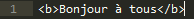

Bonjour à toutes et à tous !
Ceci est un site d'html. Vous y trouverez des indications sur le "Html 5". Bonne visite !
Conseil n°1:
Pour souligner, il faut utiliser la sintaxe u ET /u
Ex:
Avant de commencer tous mes conseils, un petit aperçu de mon site jusque là:
Conseil n°2:
Pour écrire en bleu, il faut utiliser la sintaxe b ET /b
Stop !!!
Avant toute chose, il faut créer un fichier que vous nommerez "style.css" comme celui-ci:
Dans celui-ci, vous écrirez cela:
Commençons par décortiquer le code:
- "body" signifie que tout l'arrière plan du site est concerné
- "{" et "}" sont le début et la fin de la sintaxe
- "background-image" est utilisé pour définir une image comme arrière-plan
- "mooning.png" est l'image mise en arrière plan (si vous nommez votre image differement ce sera pas mooning.png mais votre image.png)
Mais bien sur, inutile d'écrire cela si vous ne voulez qu'un arrière plan blanc !
Ensuite pour écrire en couleur, il faut écrire cela:
Décortiquons encore le code:
- "p" est le nombre de la variable (j'ai mis "p" mais vous pouvez mettre "r" ou une autre lettre)
- "{" et "}" sont le début et la fin de la sintaxe
- "color" signifie que la sintaxe correspondra à une couleur
- "red" signifie que la couleur sera du rouge mais cela n'est qu'un exemple, vous pouvez mettre "blue" ou "marron" ou "green" tant que c'est en anglais.
Puis, pour appliquer ce qu'on vient d'écrire, il faut mettre "p" et "/p" avant et après chaque mot que l'on veut mettre en rouge ce qui donne:
Mais imaginons que je veille un texte qui soit, mais pas tout le temps, au milieu et rouge, comment je fais ?
Simple; il suffit d'écrire cela:

Comme toujours, décortiquons le code:
- "h2" est le nom de la variable (j'ai mis "h2" mais vous pouvez mettre "h3" ou un autre "h+nbre")
- "{" et "}" sont le début et la fin de la sintaxe
- "text-align" signifie que l'on veut mettre le texte à tel endroit
- "center" est l'endroit où l'on veut mettre le texte. Vous pouvez mettre aussi "up", "down",...
- "color" signifie que la sintaxe correspondra à une couleur
- "red" signifie que la couleur sera du rouge mais cela n'est qu'un exemple, vous pouvez mettre "blue" ou "marron" ou "green" tant que c'est en anglais.
Puis, pour appliquer ce qu'on vient d'écrire, il faut mettre "h2" et "/h2" avant et après chaque mot que l'on veut impliquer dans la variable (il faut remplacer "h2" par le h+nbre que vous avez mis):
Nous en avous enfin terminé avec le fichier "style.css" !
Remettons-nous à notre fichier html. Je disais donc...
Conseil n°2:
Pour écrire en bleu, il faut utiliser la sintaxe b ET /b
Mais, comme montré précedemment, il faut écrire cela dans le fichier "style.css" pour que la sintaxe "b" et "/b" marche:
Puis il suffit d'écrire ça:

Ce qui nous donne: Bonjour à tous
Maintenant, voyons ce que ça donne sur L'ENSEMBLE du site:


Comme vous voyez, un site peut faire des centaines de lignes !